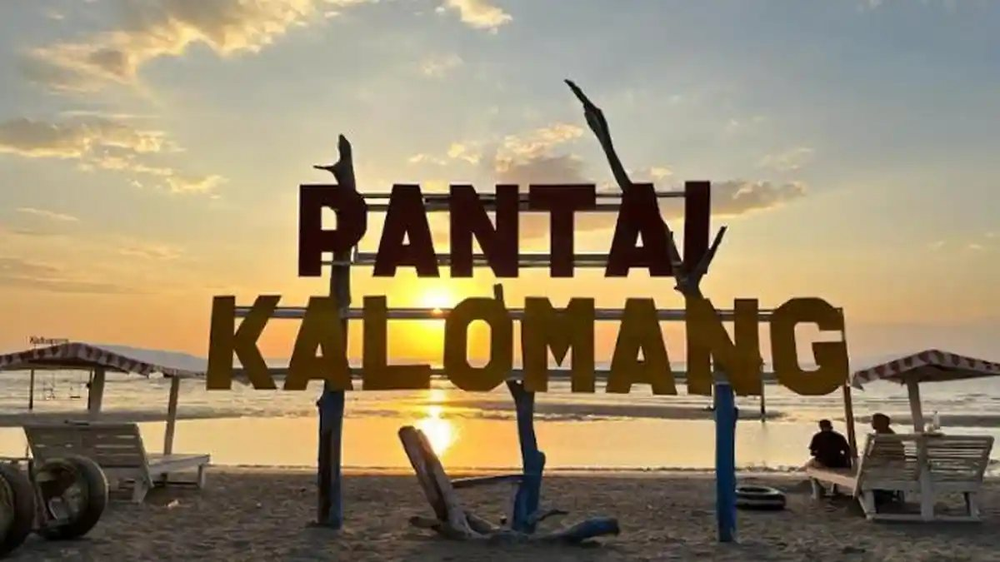
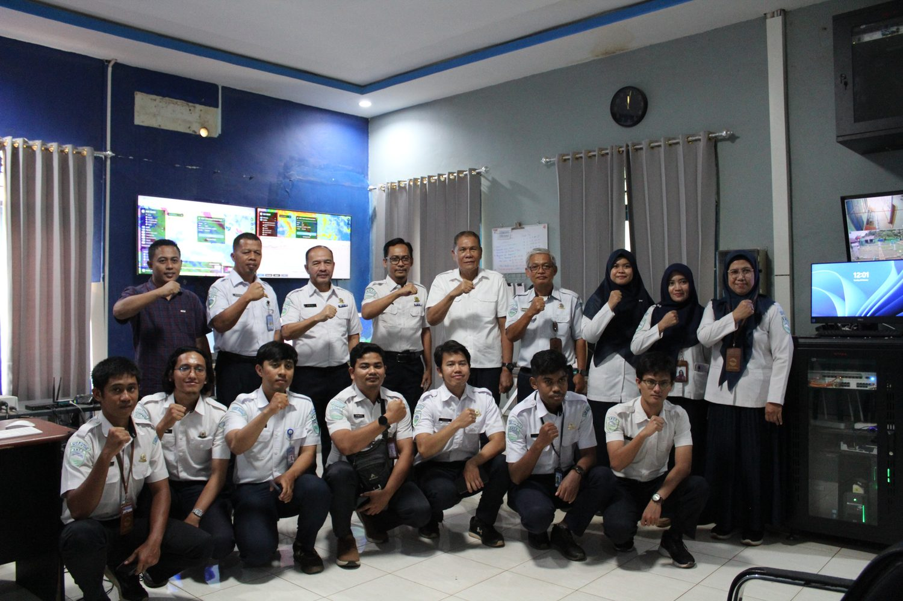
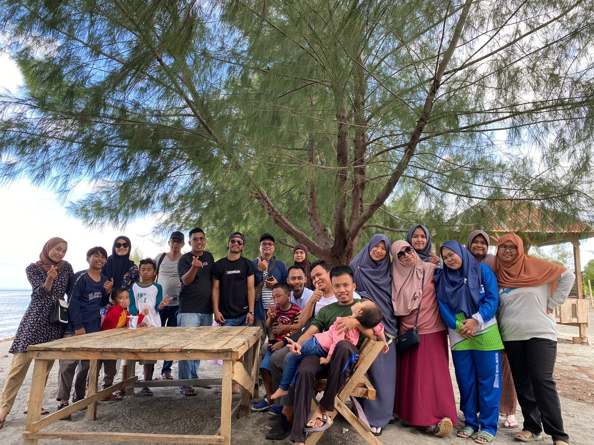
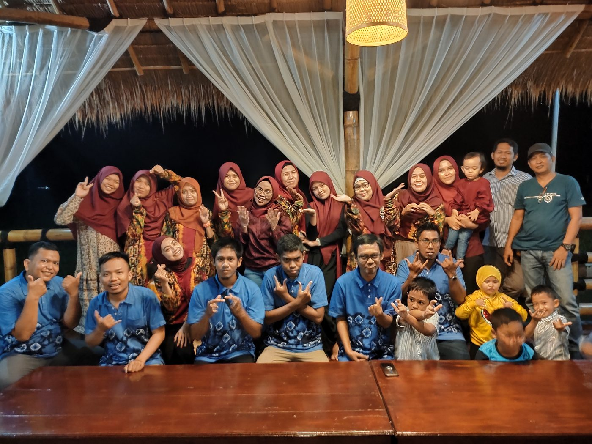

Ada waktu kita untuk kumpul, tertawa, dan menikmati sore di tepi pantai. Datang, ya!
Assalamu'alaikum & Salam Sejahtera
Dengan hati yang hangat, kami ingin mengajak Bapak, Ibu, dan seluruh keluarga untuk berkumpul dan menghabiskan waktu bersama di Pantai Kalomang. Semoga bisa hadir dan ramai-ramai bersama kita.
Catat Tanggalnya
Sejenak menepi dari kesibukan, berkumpul dan tertawa bersama orang-orang yang kita sayang.
Hari & Tanggal
Selasa, 4 Agustus 2026
Waktu
12.30 WITA – SelesaiKumpul di Kantor Pomalaa
Tempat
Pantai KalomangTanggetada, Kolaka, Sultra

Momen paling berkesan selalu lahir ketika kita berkumpul.
Di sela hari-hari menjaga cuaca yang tak pernah libur, ada satu hal yang selalu kita syukuri — bisa berkumpul sebagai satu keluarga.
Keluarga Besar Stamet Sangia Nibandera
Dresscode
Dresscode keberangkatan: Jersey Kantor Merah atau baju merah ternyamanmu. Kita abadikan senyum bahagia dalam satu warna persaudaraan!
Susunan Acara
Jangan Lupa
Siapkan satu kado seru untuk acara tukar kado, ya! Budget cukup Rp30.000 saja — yang penting bikin senyum.
Kumpul di Kantor PomalaaMengenakan dresscode merah
Cek peserta, peralatan & kendaraan
Berangkat ke Pantai Kalomang
Main air & ramah-tamahSeksi acara siapkan bakar-bakar
Istirahat sejenak
Games & tukar kadoSaatnya seru-seruan bareng keluarga
Bersih-bersih & siap santap malam
Jeda Maghrib & makan malam
Acara UtamaSambutan · video · kesan-pesan · hadiah & kenang-kenangan · foto bersama · doa
Bersih-bersih
Pulang ke Pomalaa
Album Kenangan
Cerita-cerita hangat yang selalu bikin kangen


Turut Mengundang
Kehadiran kalian yang paling kami tunggu
Mari luangkan waktu sejenak untuk mempererat silaturahmi, menikmati hidangan bersama, dan mengukir kenangan indah yang akan terus membekas. Kehadiran Bapak/Ibu beserta keluarga tercinta merupakan kehormatan yang akan menyempurnakan keistimewaan acara ini.
Sampai jumpa, dengan hangat —Panitia Family Gathering · Stamet Sangia Nibandera Kolaka